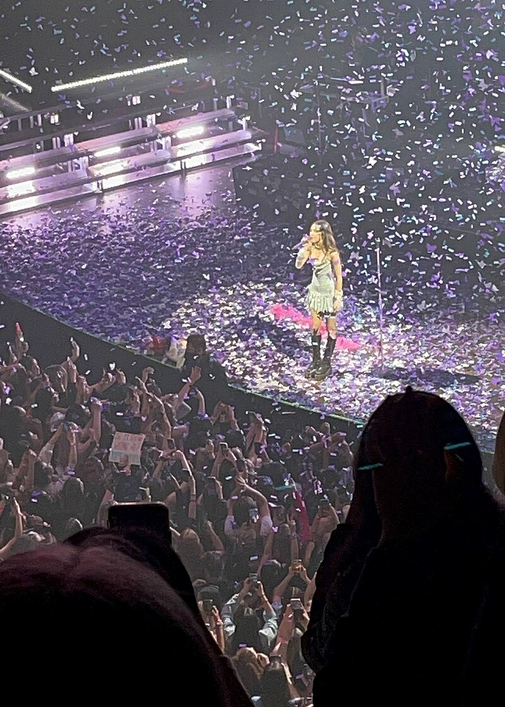

Olivia Isabel Rodrigo (born February 20, 2003) is an American singer, songwriter and actress. She gained recognition for her lead roles on the Disney television programs Bizaardvark (2016–2019) and High School Musical: The Musical: The Series (2019–2022).
After signing with Geffen and Interscope Records in 2020, Rodrigo released her debut single "Drivers License", which broke various records and became one of the best-selling songs of 2021, propelling her to mainstream fame. She followed it up with singles "Deja Vu" and "Good 4 U", and released her debut studio album, Sour, in 2021, which was met with critical and commercial success, winning various accolades including three Grammy Awards. A Disney+ documentary, Olivia Rodrigo: Driving Home 2 U, followed in 2022, chronicling her creative process with Sour. In 2023, Rodrigo released her critically acclaimed second studio album, Guts, which yielded the successful singles "Vampire" and "Bad Idea Right?". Rodrigo has achieved three Billboard Hot 100 number-one singles, one Billboard 200 number-one album, and five multi-Platinum certifications by the Recording Industry Association of America (RIAA). In addition to other recognitions, she has won an American Music Award, seven Billboard Music Awards and three MTV Video Music Awards. Time named her the 2021 Entertainer of the Year and Billboard named her Woman of the Year in 2022.
Olivia Isabel Rodrigo was born on February 20, 2003, at Rancho Springs Medical Center in Murrieta, California, the only child of school teacher Jennifer and family therapist Chris Rodrigo. She grew up in neighboring Temecula. Rodrigo is a Filipina American; her father is of Filipino descent while her mother has German and Irish ancestry.She has stated that her paternal great-grandfather emigrated from the Philippines as a teenager and her family follows Filipino traditions and cuisine. She grew up listening to her parents' favorite alternative rock music, such as the bands No Doubt, Pearl Jam, the White Stripes, and Green Day.[14
Rodrigo started taking acting and vocal lessons in kindergarten and learned to play piano soon after.Rodrigo attended Lisa J. Mails Elementary School in Murietta, participating in their after-school musical theater program. Rodrigo was playing guitar by age 12. Rodrigo first became interested in songwriting after listening to country music, especially singer-songwriter Taylor Swift. She attended Dorothy McElhinney Middle School in Murietta for a year, but when she landed her role on Bizaardvark moved to Los Angeles and was homeschooled from 2016 until she graduated in 2021. Rodrigo first appeared onscreen in an Old Navy commercial. Shortly after in 2015, at age twelve, she made her acting debut portraying the lead role of Grace Thomas in direct-to-video film An American Girl: Grace Stirs Up Success. In 2016, Rodrigo received recognition for starring as Paige Olvera, a guitarist in the Disney Channel series Bizaardvark, and played the role for three seasons. In February 2019, she was cast in the starring role of Nini Salazar-Roberts on the Disney+ series High School Musical: The Musical: The Series, which premiered in November of that year. Rodrigo was praised for her performance, with Joel Keller from Decider describing her as "especially magnetic". In 2022, she left the show at the end of its third season to focus on her music career.
Rodrigo signed with Interscope Records and Geffen Records in 2020. She negotiated the record deal to secure for herself ownership of the masters of her music. On January 8, 2021, she released her debut single, "Drivers License", which she co-wrote with producer Dan Nigro. Within the week of its release, "Drivers License" was critically acclaimed, and broke Spotify's record twice for most daily streams ever for a non-holiday song with over 15.7 million global streams on January 11 and over 17 million global streams the next day. It went on to break another Spotify record for the first song in history to hit 80 million streams in 7 days. The song debuted at number one on Billboard Hot 100, and reached number-one in numerous other countries. Rodrigo stated in an interview that "It's been the absolute craziest week of my life ... My entire life just, like, shifted in an instant."
On April 1, 2021, Rodrigo released her follow-up single, "Deja Vu", which debuted at number eight on the Billboard Hot 100, making her the first artist to debut their first two releases in the top 10 of the Hot 100. The third single preceding her debut album, "Good 4 U", followed on May 14, 2021, and became her second single to debut at number one on the Hot 100. Sour, her debut studio album, was released on May 21, 2021, to critical acclaim. Slate's Chris Molanphy said its first three singles alone established Rodrigo's "early status as Gen-Z's most versatile new artist". According to Clash critic Robin Murray, Rodrigo is regarded as one of Generation Z's finest artists, while Variety dubbed her "the voice of her generation" in its cover story of Rodrigo. Sour debuted at number one on the Billboard 200 chart and spent a total of five weeks at the spot, becoming the longest reigning number-one album by a female artist in 2021.
Rodrigo performing at Massey Hall, Toronto during her Sour Tour. In June 2021, Rodrigo premiered Sour Prom, a prom-themed concert film on YouTube. Three days later, she was named Entertainer of the Year by Time. In an Instagram post on December 24, 2021, Rodrigo uploaded a snippet of a Christmas song called "The Bels" that she wrote and recorded at age five. According to Billboard, Rodrigo closed 2021 as the best-selling singles artist worldwide, placing eight songs on the year-end Global 200 chart, including "Drivers License" at number four, "Good 4 U" at number nine, and "Deja Vu" at number 27. In the US and UK, Sour was respectively the third and fourth best-selling album of 2021. Sour and "Drivers License" were also respectively Spotify's most streamed album and song globally. The International Federation of the Phonographic Industry (IFPI) ranked Rodrigo as the tenth best selling artist of 2021 and Sour as the second best-selling album of 2021. To support Sour, Rodrigo embarked on her debut headlining tour, the Sour Tour, which ran from April to July 2022; it included stops in the United States, Canada, and Europe. Rodrigo's Disney+ documentary film Olivia Rodrigo: Driving Home 2 U, which details the making of Sour, was released on March 25, 2022. Rodrigo received seven nominations at the 64th Annual Grammy Awards, including Best New Artist, Album of the Year for Sour, and Record of the Year and Song of the Year for "Drivers License". She won the awards for Best New Artist, Best Pop Vocal Album for Sour, and Best Pop Solo Performance for "Drivers License".
Rodrigo announced the title of her second album, Guts, which was released on September 8, 2023; she released the album's lead single, "Vampire", on June 30. Rodrigo described the album as about "growing pains" and figuring out who she is at this point in her life. She felt like she grew "10 years" between the ages of 18 and 20, a process she describes as a natural part of "growth", which she hopes to reflect with the record. "Vampire" became her third single to debut atop the Billboard Hot 100. The album's second single, "Bad Idea Right?", was released on August 11, 2023. It reached the top 10 in the US and UK. On August 16, Rodrigo became the youngest artist to receive the BRIT Billion Award for achieving over one billion digital streams in the United Kingdom.
Rodrigo names Taylor Swift and Lorde as her idols and main musical inspirations, and also dubbed herself Swift's biggest fan "in the whole world".She dubs The White Stripes band member Jack White her "hero of all heroes". Her other influences include Alanis Morissette, Kacey Musgraves, Fiona Apple, St. Vincent, Cardi B, Gwen Stefani and Avril Lavigne.
Rodrigo's voice type is identified as soprano. Media outlets generally describe Rodrigo as a pop artist, musically rendering to pop rock, teen pop, and indie pop styles, as well as channeling 1990s alternative rock. Rodrigo has stated that she wants to be a songwriter and not "the biggest pop star that ever lived", and chose to sign with Interscope/Geffen Records because its CEO John Janick praised her songwriting, not her "potential star quality". Music journalist Laura Snapes called Rodrigo a "flag-bearer" for a new wave of songwriters who incline towards power ballads "that are as emotional as ever, but project that emotion inward, trading bombast for hush", and described her musical style as rooted in heartache, mental health, and sadness, without being melodramatic, expressing more realistic perspectives than resilient.
Rodrigo and her Bizaardvark co-star Madison Hu teamed up with Instagram #KindComments to encourage their fans to spread kindness and foster positivity on social media in October 2017–2018.
On April 10, 2018, Rodrigo and Hu joined other artists for My Friend's Place 30th Anniversary, a non-profit organization that helps homeless youth find shelter, food, work, education and healthcare. The event was hosted by Jack Black and raised over $740,000 for local homeless youth. Also in 2018, Rodrigo was named an institute speaker and panelist for the Geena Davis Institute on Gender in Media. In December that year, she became the face of "She Can STEM" campaign.
In February 2021, Rodrigo released her merchandise "Spicy Pisces T-shirts" on her website and all the proceeds went to Plus1 benefitting She's the First which sponsors young girls' scholarship and education. In June 2021, she sold her clothes, wardrobe and all items from her music videos on Depop and 100% of all proceeds from 'Sour Shop' was donated to charitable organization. Rodrigo donated a portion of her Sour Tour platinum ticket sales to Women for Women International which support women survivor of war by helping them rebuild their lives after war devastation. In December 2021, she joined Katy Perry, Kelly Clarkson, Billy Porter and more on Musicians on Call in the 2nd Annual Virtual Concert "Hope for the Holidays" to bring Christmas cheer by uplifting performances and messages of hope to hospital patients via virtual concert.
On July 13, 2021, Rodrigo was involved in a White House effort to promote COVID-19 vaccinations among young people in the U.S. She met with President Joe Biden, Vice President Kamala Harris, and Chief Medical Advisor Anthony Fauci, to discuss her efforts. CNN reported that Rodrigo would record videos about the importance of young people getting vaccinated, including answering questions the youth have regarding the vaccination.
In response to the 2022 overruling of the Roe v. Wade U.S. Supreme Court ruling, Rodrigo performed "Fuck You" with British singer Lily Allen at Glastonbury Festival. She prefaced the performance by dedicating it to the associate justices who voted to overturn Roe, saying "I'm devastated and terrified. So many women and so many girls are going to die because of this. I wanted to dedicate this next song to the five members of the Supreme Court who have showed us that at the end of the day, they truly don't give a shit about freedom. The song is for the justices."
Rodrigo became consumer beauty brand Glossier's first ever celebrity partner in April 2022.
On November 20, 2022, Rodrigo joined Billie Eilish, John Legend, Tom Holland and more with co-founders Eddie Vedder and Jill Vedder for the Third Annual Venture Fundraising event and helped raise more than $1.3 million that month and $6 million for the last 3 years to find a cure for Epidermolysis Bullosa and other rare diseases. In December 2022, Rodrigo with Chris Stapleton, Selena Gomez and more donated exclusive items to 2nd Annual ASCAP Foundation which support music education and talent development programs across the U.S. In the same month, Rodrigo took part in that year's annual virtual concert, 'Musicians on Call' with 30 different artists which brought holiday classic performances and videos of messages of hope to patients, families and health-workers in more than 5,000 hospitals nationwide.
On January 2023, Rodrigo, alongside Swift, Harry Styles and J-Hope of BTS, donated items to the MusiCares Foundation Charity Relief Auction to help struggling musicians with their medical bills and other financial needs.